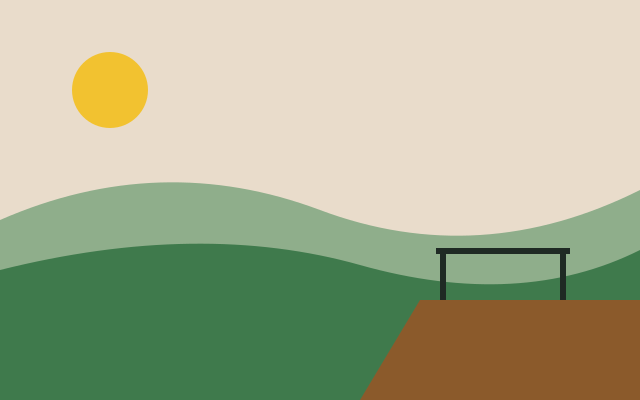

Escolha a trilha do seu fim de semana
Trilhas da região de Guarapuava, com a dificuldade, a distância e a duração de cada uma.
Trilhas em destaque
Ver todas as trilhas


Trilhas da região de Guarapuava, com a dificuldade, a distância e a duração de cada uma.
